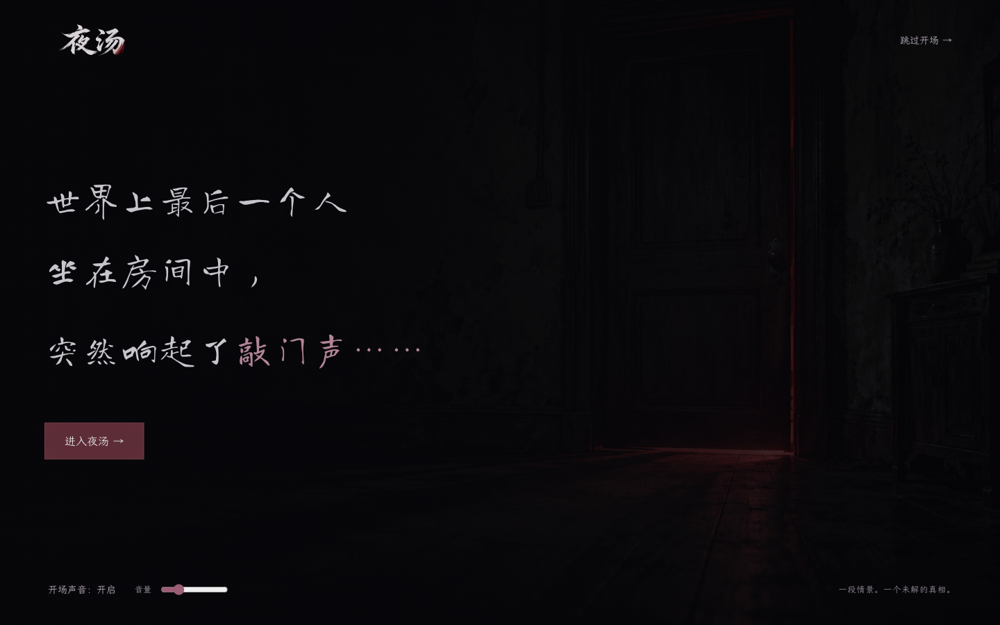
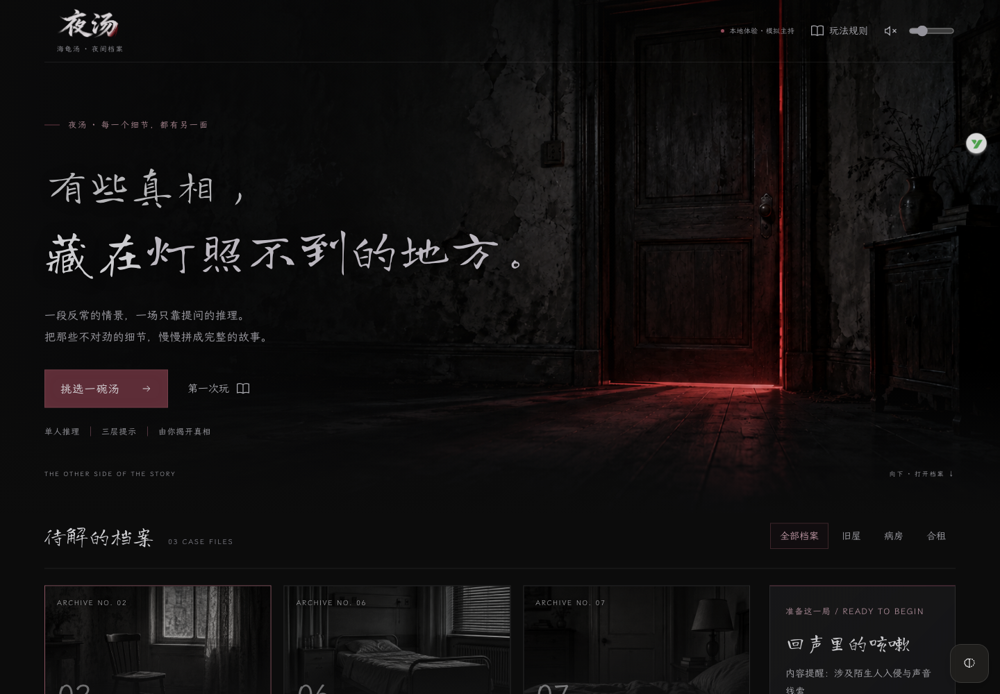
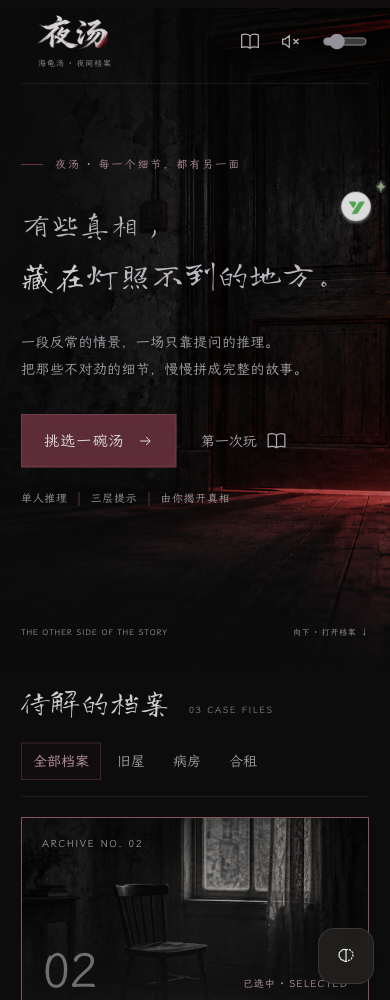

夜汤 / 字标与全界面字体 V0.5
每一个细节，都有另一面。
夜汤字标暗红修订与整套界面字体。以下为实际浏览器截图。
进入实际游戏
打开本机游戏（服务运行时可用）。也可在本文件夹双击 启动原型.command。

本版仍为模拟主持，不需要API Key。
正式开场 · V0.6
先选有声或静音，8.2秒内分段显示开场文字，配环境声、短暂安静和三次敲门。可随时跳过；首页底部可重看。



本轮检查
22项程序检查通过；选题、推理、规则、汤面弹窗和复盘完成字体与布局走查。首页320、390、768、1024、1440像素无横向溢出，推理和复盘检查320、390、768、1440像素。